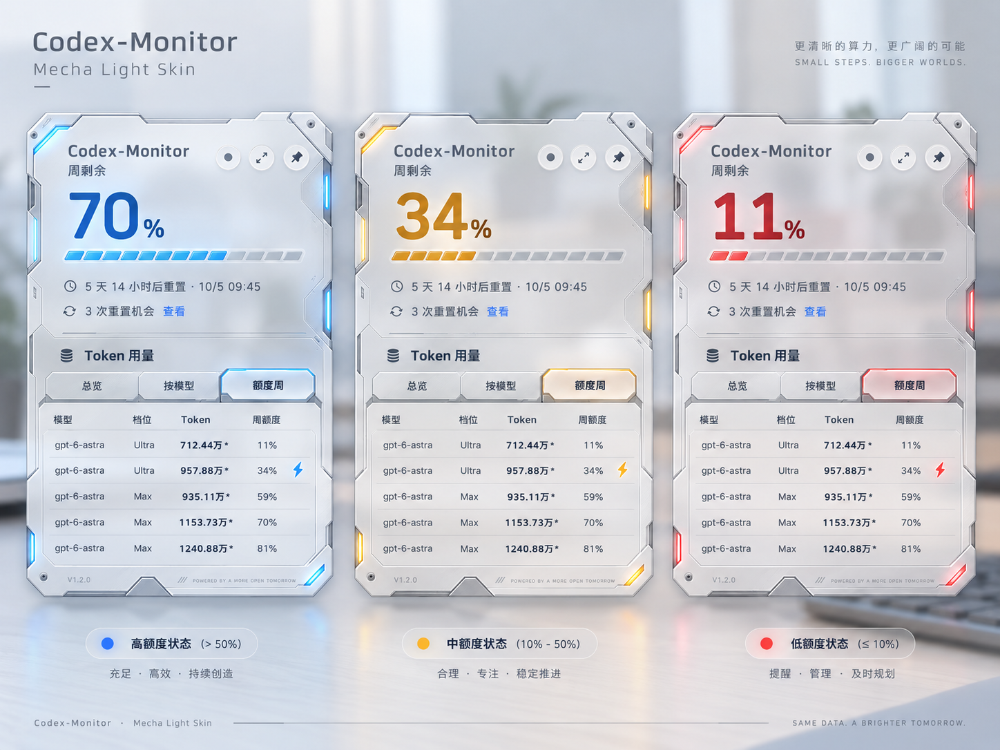

Mecha Light · 原图 / 实际界面对照
参考集 CM-v1.3.0-Mecha-Light-Approved-v1。原图保持冻结；下面的界面是生产组件在 Chromium 中渲染的合成数据截图。默认按真实 CSS 尺寸显示：展开 306 × 506，收起 72 × 72（截图各带 4px 安全边距）。截图使用 2× backing pixels，显示为 1× 时不放大界面。
Mecha Human Visual Acceptance：Pending。自动化和截图不代替 macOS／Windows 实机体验或用户的视觉确认。示例数字、模型和时间均为合成数据。
70% 蓝 · 34% 黄橙 · 6% 红
批准展开原图

原图的 11% 被画成红色。正式阈值优先：11% 黄橙，10%／6% 红；原件没有改色。
实际展开 + 收起 · 六态
批准收起原图与实际收起态
50% / 11% / 10% 边界
已有布局的实际适配
- 保留银白金属底板、几何切角、上下缺口、分层边缘、紧固件、机械接缝和局部灯带。实际使用矢量与渐变；原图的照片级微划痕、反光及厚倒角层次未逐像素复刻，须据实对照。
- 原图宽高与现有 Widget 不同；外框纵向随 Full／Compact 适配。72px 收起态缩减细小接缝／灯带的视觉重量，保留同一壳体和状态语义。这些光学适配尚待用户确认。
- 主数字与百分号在展开／收起共用 Exo 2、650 字重和同一状态颜色变量。此字体是有 OFL 1.1 授权的几何无衬线实现选择，不宣称为原图的精确字体。
- 保留实时 5h／Weekly、重置时间、四列列表和原按钮；Fast 闪电留在 Effort 单元格。不会照原图另添第五列、装饰按钮或宣传文字；weekly-only 收起态保留 W。
- 不透明度图片由统一根层实际渲染生成，切换选择会载入对应截图，不对这张对照页上的图片再次叠加 opacity。
English · Overview / By Model · Full / Compact
专项工程矩阵另覆盖中英文、三种 Token 模式、Fast／非 Fast、两种主额度来源、0% 与小数阈值、不可用／未登录／缓存过期、点击及内部滚动。验证报告 · 原图校验清单 · 远端原件读回证据